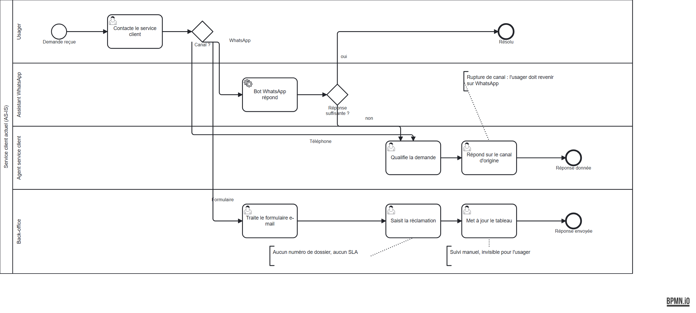
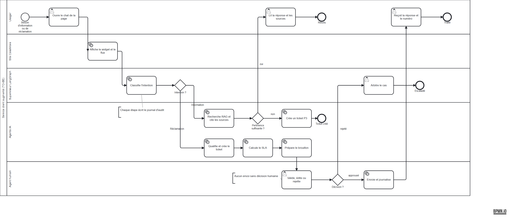

Processus service client, AS-IS et TO-BEBPMN 2.0, deux pools, cinq constats et six changements
17.11.2026
AS-IS
Trois canaux, aucun dossier, suivi manuel
4 couloirs

- Rupture de canal : l'usager revient sur WhatsApp pour suivre.
- Aucun numéro de dossier, aucune échéance SLA.
- Le back-office met à jour un tableau, invisible pour l'usager.
- Trois canaux traités séparément, sans vue unifiée.
TO-BE
Chat in-page, superviseur LangGraph, validation humaine
5 couloirs

- Le chat remplace la rupture de canal, la réponse est streamée.
- Le superviseur route vers le RAG ou vers la réclamation.
- Le ticket porte une priorité et une échéance SLA calculées.
- Aucun envoi sans décision humaine, chaque étape est journalisée.
- Le rejet part en arbitrage superviseur, pas dans le vide.
- L'usager reçoit le numéro et suit son dossier sur le site.